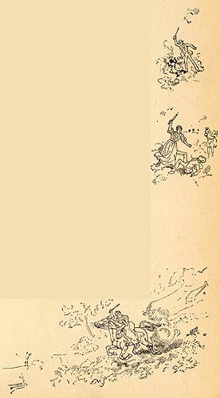

|
 The
illustrations on this page show the violent climax of
Roxy's experience on a cotton plantation. When the overseer
catches the little girl giving food to Roxy ("'ca'se she
knowed de overseer did n't gimme enough to eat"), he hits
her across the back "wid his stick, which 'uz as thick as a
broom-handle." Seeing the girl "drop screamin' on de
groun'," Roxy rebels: "All de hell-fire dat 'uz ever in my
heart flame' up, en I snatch de stick outen his han' en
laid him flat." As the other field hands, frightened by her
act, gather around the overseer "to hep' him," Roxy jumps
on his horse and takes out for the river, on which she
escapes north to St. Louis again. Roxy fights here to defend a crippled child -- the sentimentality of the episode seems calculated to arouse the reader's sympathy with her, even her attack on a white person. But the novel's structure of ironies complicate its effect: as part of the scene in which she describes the horrors of slavery, for example, Roxy and Tom also plot to rob the white people of Dawson's Landing. In the very next chapter Tom "blacks up" and kills Judge Driscoll, which shifts the story's focus from the slave to the master as the victim. Unlike Chapter 2, where $2 were stolen, these "slaves" commit much more serious crimes, and (also unlike Chapter 2) no narrator steps in here to justify their acts in the context of the crime of slavery itself. The Barrett Collection, UVA PS 1317 .A1 1894 |